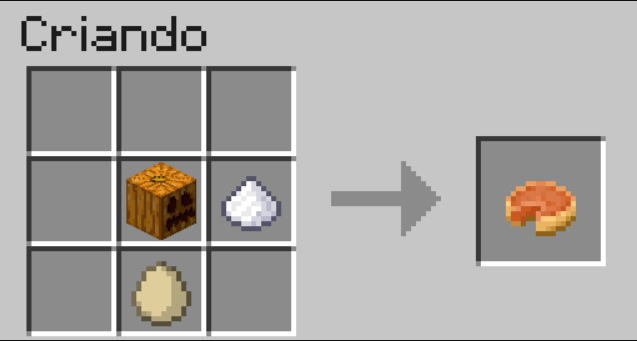

Torta de Abóbora
INGREDIENTES
- Abóbora – 2 xícaras (cozida e amassada)
- Açúcar – 1 xícara
- Ovos – 2 unidades
- Leite – 1 xícara
- Canela – 1 colher (chá)
- Noz-moscada – 1 pitada
- Massa de torta – 1 base
INGREDIENTES

Obtida ao colher abóboras encontradas pelo mundo.
Produzido a partir da cana-de-açúcar.
Obtido de galinhas.